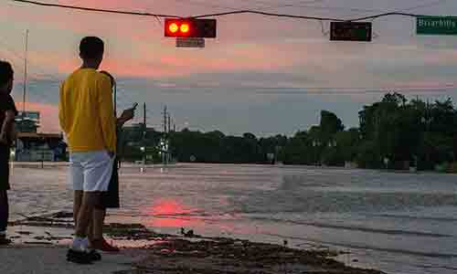

Project 1 - "Harvey - A Story of Texas Strength"
This website is dedicated to Texas' survivors of a hurricane that hit us head on. This is the story of Hurricane Harvey and the community of reciliant Texans that showed their spirit of survival.

Texas is known for its mantras, "Texas Tough," "Texas Strong," "Don't Mess With Texas!" Harvey ignored our mantras; he did not pay attention to our grit. He did mess with Texas, and he did try to weaken us. Harvey indeed messed with Texas, but he could not mess with our spirit, toughness, and strength.
Photography: L. Roca (Copyright 2017)